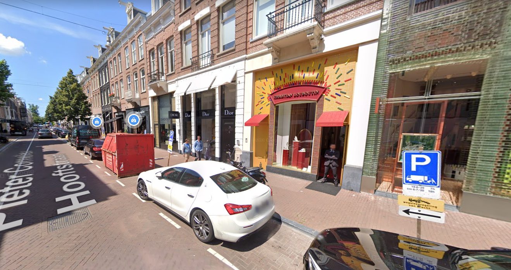

- 
PC Hooftstraat
The PC Hooftstraat is another place to shop for luxury stuff. It’s a street located in Amsterdam-South. It’s one of the most expensive shopping streets in the Netherlands, with mostly expensive stores but also expensive apartments. A few examples of stores located here are Louis Vuitton and Chanel.